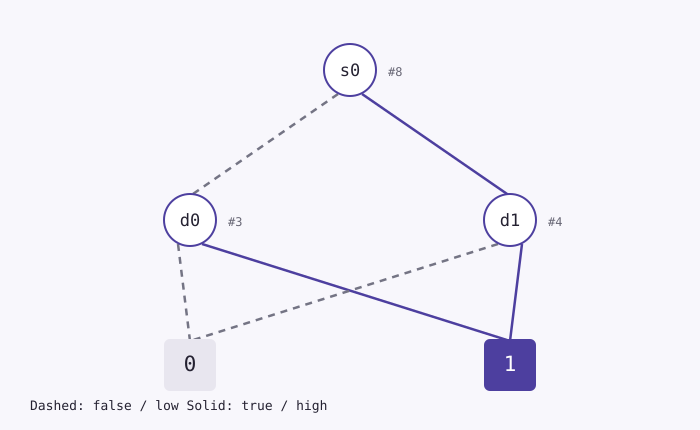
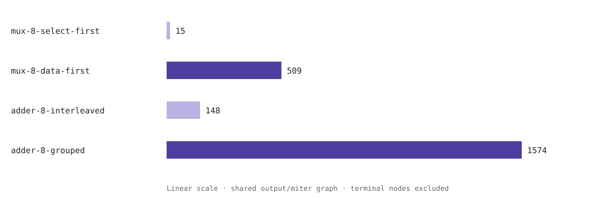

Boolean circuit
equivalence lab
A fixed-order binary decision diagram engine compares ripple-carry and parallel-prefix adders, finds a faulty carry gate, and measures how variable order changes graph size.
Synthetic circuit fixtures. Executed locally in TypeScript / Node 24. This is a software model of Boolean logic, with no physical hardware or gate-delay measurement.
Compare every named output
Both circuits compile into the same manager and variable order. Equal children collapse; identical variable/low/high triples share one node. Cached Boolean operations construct the output differences.
miter = OR(d0, …, dn)
miter = 0 ⇒ EQUIVALENT
A nonzero miter has a satisfying assignment. The checker follows false edges first, fills skipped inputs with false, then independently evaluates both gate lists to confirm a difference.
Node IDs are local to one manager. Numeric roots from separate managers cannot establish equivalence. Diagnostics preserve actual reachable nodes and both output-root maps.

Fault at the bit-2 carry gate
The mutant replaces the carry-combining OR with AND at bit 2. The first distinguishing full assignment in the declared variable order is preserved below. This is a static bit vector, not a sampled waveform.
| Signal / result | carry / bit 4 | bit 3 | bit 2 | bit 1 | bit 0 | Decimal |
|---|---|---|---|---|---|---|
| A | 0 | 0 | 1 | 0 | 0 | 4 |
| B | 0 | 0 | 1 | 0 | 0 | 4 |
| Ripple result | 0 | 1 | 0 | 0 | 0 | 8 |
| Faulty result | 0 | 0 | 0 | 0 | 0 | 0 |
Differing outputs: s3. Input rows are zero-extended to five columns. Every other input and output bit is retained in the saved assignment.
256 of 512 exhaustive inputs distinguish the faulty four-bit circuit. The saved witness is the first by false-first assignment order; it is not a claim about minimum numeric operands or the smallest possible repair.
Same functions, different graph sizes
Selector-first order produces 15 reachable nonterminal nodes for the eight-input multiplexer. Putting its eight data inputs first produces 509. Both checks complete with the same equivalence result.

| Comparison | Result | Allocated | Reachable | Median ms | Min–max ms |
|---|---|---|---|---|---|
| adder-2-interleaved | EQUIVALENT | 33 | 19 | 0.067 | 0.058–0.285 |
| adder-4-interleaved | EQUIVALENT | 118 | 50 | 0.078 | 0.071–0.178 |
| adder-4-faulty | INEQUIVALENT | 95 | 69 | 0.099 | 0.085–0.231 |
| adder-8-interleaved | EQUIVALENT | 460 | 148 | 0.325 | 0.204–0.412 |
| adder-8-grouped | EQUIVALENT | 4,987 | 1,574 | 2.635 | 1.739–4.302 |
| adder-12-interleaved | EQUIVALENT | 1,034 | 294 | 0.766 | 0.635–1.193 |
| mux-2-select-first | EQUIVALENT | 7 | 3 | 0.009 | 0.008–0.023 |
| mux-8-select-first | EQUIVALENT | 96 | 15 | 0.073 | 0.070–0.093 |
| mux-8-data-first | EQUIVALENT | 820 | 509 | 0.330 | 0.267–0.488 |
2 warm-ups and 9 fresh-manager measured runs per experiment. Single-process local timings are illustrative; sub-millisecond differences are not reliable performance rankings. No dynamic reordering or garbage collection is implemented.
Incomplete work returns UNKNOWN
Data-first mux8 exhausts the nonterminal allocation limit. No miter or counterexample is returned. Raising the limit lets the same fixture finish as equivalent.
Node-limit diagnosticThe selector-first fixture is allowed no computed-cache entries. Its first nontrivial cached operation cannot finish within that budget.
Cache-limit diagnosticThe independent truth-table oracle still finds no mismatches for these small fixtures. That separate result does not relabel either incomplete BDD run. UNKNOWN is distinct from both equivalence and inequivalence.
Scope: combinational, two-valued gates only; 1–32 inputs, up to 512 topologically ordered gates and 33 outputs. No sequential state, clock semantics, X/Z values, propagation delay, SAT solver, probabilistic reasoning or production sign-off claim.
Replay the checks and assignments
npm ci --ignore-scripts npm run typecheck npm test npm run measure -- --output results-local npm run cli -- replay data/circuits/adder_4_ripple.json data/circuits/adder_4_faulty.json results/comparisons/adder-4-faulty.json
Tests independently check gate truth tables and integer addition, validate all preserved BDD diagnostics against fresh execution, reconcile every retained truth-table row, and check normalized source/input hashes. Linux and Windows CI perform a fresh run after testing committed evidence.
Primary algorithm reference: Randal E. Bryant, Graph-Based Algorithms for Boolean Function Manipulation, IEEE Transactions on Computers, 1986. Fixed-order reduced graphs provide canonical representations; graph size can depend strongly on the chosen order.
AI-assisted implementation and synthetic fixtures. Raw data comes from actual local executions. Captures document review of this report, not historical manual circuit-design work. The report renderer is separate from the measurement driver; regenerating presentation does not replace the recorded timings.